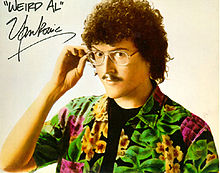
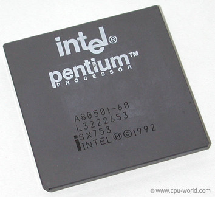

Adam Whetham
Grand Forks ND
Information Systems
A link to a page about Marketing 475, a Class I'm taking
Here are the lyrics from Weird Al's song "All About the Pentiums"
It's all about the Pentiums, baby Uhh, uh-huh, yeah Uhh, uh-huh, yeah It's all about the Pentiums, baby It's all about the Pentiums, baby It's all about the Pentiums! (it's all about the Pentiums, baby) It's all about the Pentiums! (it's all about the Pentiums, baby) Yeah What y'all wanna do? Wanna be hackers? Code crackers? Slackers Wastin' time with all the chatroom yakkers? Nine to five, chillin' at Hewlett Packard? Workin' at a desk with a dumb little placard? Yeah, payin' the bills with my mad programming skills Defraggin' my hard drive for thrills I got me a hundred gigabytes of RAM I never feed trolls and I don't read spam Installed a T1 line in my house Always at my PC, double-clickin' on my mizouse Upgrade my system at least twice a day I'm strictly plug-and-play, I ain't afraid of Y2K I'm down with Bill Gates, I call him Money for short I phone him up at home and I make him do my tech support It's all about the Pentiums, what? You've gotta be the dumbest newbie I've ever seen You've got white-out all over your screen You think your Commodore 64 is really neato What kinda chip you got in there, a Dorito? You're usin' a 286? Don't make me laugh Your Windows boots up in what, a day and a half? You could back up your whole hard drive on a floppy diskette You're the biggest joke on the Internet Your database is a disaster You're waxin' your modem, tryin' to make it go faster Hey fella, I bet you're still livin' in your parents' cellar Downloadin' pictures of Sarah Michelle Gellar And postin' "Me too!" like some brain-dead AOL-er I should do the world a favor and cap you like Old Yeller You're just about as useless as jpegs to Hellen Keller It's all about the Pentiums! (it's all about the Pentiums, baby) It's all about the Pentiums! (it's all about the Pentiums, baby) It's all about the Pentiums! (it's all about the Pentiums, baby) It's all about the Pentiums! (it's all about the Pentiums, baby) Now, what y'all wanna do? Wanna be hackers? Code crackers? Slackers Wastin' time with all the chatroom yakkers? Nine to five, chillin' at Hewlett Packard? Uh, uh, loggin' in now Wanna run wit my crew, hah? Rule cyberspace and crunch numbers like I do? They call me the king of the spreadsheets Got 'em all printed out on my bedsheets My new computer's got the clocks, it rocks But it was obsolete before I opened the box You say you've had your desktop for over a week? Throw that junk away, man, it's an antique Your laptop is a month old? Well that's great If you could use a nice, heavy paperweight My digital media is write-protected Every file inspected, no viruses detected I beta tested every operating system Gave props to some, and others? I dissed 'em While your computer's crashin', mine's multitaskin' It does all my work without me even askin' Got a flat-screen monitor forty inches wide I believe that your says "Etch-A-Sketch" on the side In a 32-bit world, you're a 2-bit user You've got your own newsgroup, alt.total-loser Your motherboard melts when you try to send a fax Where'd you get your CPU, in a box of Cracker Jacks? Play me online? Well, you know that I'll beat you If I ever meet you I'll control-alt-delete you What? What? What? What? What? It's all about the Pentiums! (it's all about the Pentiums, baby) It's all about the Pentiums! (it's all about the Pentiums, baby) It's all about the Pentiums! (it's all about the Pentiums, baby) It's all about the Pentiums! (it's all about the Pentiums, baby) Now, what y'all wanna do? Wanna be hackers? Code crackers? Slackers Wastin' time with all the chatroom yakkers? Nive to five, chillin' at Hewlett Packard? what?
 